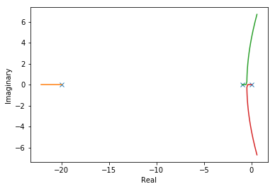
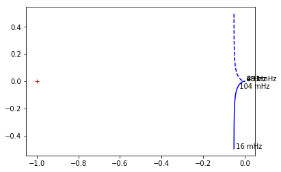

Python 3.5.1 |Anaconda 2.5.0 (64-bit)| (default, Feb 16 2016, 09:49:46) [MSC v.1900 64 bit (AMD64)]
Type "copyright", "credits" or "license" for more information.
IPython 4.0.3 -- An enhanced Interactive Python.
? -> Introduction and overview of IPython's features.
%quickref -> Quick reference.
help -> Python's own help system.
object? -> Details about 'object', use 'object??' for extra details.
%guiref -> A brief reference about the graphical user interface.
In [1]: from numpy import *
...: from pylab import *
...: from control.matlab import *
...: import time
...:
...:
...: ion()
...: ## Get transfer function from G(s) = 1 * K / (s*(s+1)*(s+20)) when K = 1
...: #from sympy import *
...: import sympy as sympy
...: from sympy import init_printing
...: init_printing()
...: s = sympy.Symbol('s') # Symbol, `a`, stored as variable
...: Gs = sympy.expand((s*(s+1)*(s+20))**-1)
...: print(Gs)
...:
1/(s**3 + 21*s**2 + 20*s)
In [2]: ## Print out the root locus
...: # Root locus example
...: #m, k = 2, 0.5
...: sys = tf([1],[1,21,20,0])
...: rvect, kvect = rlocus(sys)
...:

In [3]: # Compute velocity error Kv
...: Kv = sympy.limit(s*Gs, s, 0)
...: print('The velocity error Kv is:')
...: print(Kv)
...:
The velocity error Kv is:
1/20
In [4]: mag, phase, omega = bode(sys)
C:\Anaconda3\lib\site-packages\control\freqplot.py:153: MatplotlibDeprecationWarning: pyplot.hold is deprecated.
Future behavior will be consistent with the long-time default:
plot commands add elements without first clearing the
Axes and/or Figure.
plt.hold(True);
C:\Anaconda3\lib\site-packages\matplotlib\__init__.py:917: UserWarning: axes.hold is deprecated. Please remove it from your matplotlibrc and/or style files.
warnings.warn(self.msg_depr_set % key)
C:\Anaconda3\lib\site-packages\matplotlib\rcsetup.py:152: UserWarning: axes.hold is deprecated, will be removed in 3.0
warnings.warn("axes.hold is deprecated, will be removed in 3.0")
C:\Anaconda3\lib\site-packages\control\freqplot.py:163: MatplotlibDeprecationWarning: pyplot.hold is deprecated.
Future behavior will be consistent with the long-time default:
plot commands add elements without first clearing the
Axes and/or Figure.
plt.hold(True);
In [5]: real, imag, freq = nyquist(sys,labelFreq=10)

In [6]: